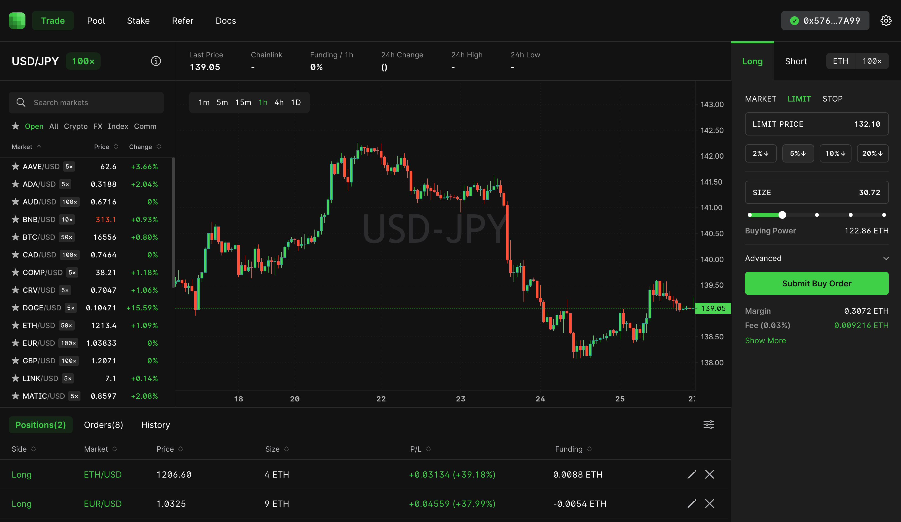

A Sneak Peek at CAP v4
CAP Labs is building a centralized derivatives exchange.
Today we’re thrilled to announce CAP's next generation exchange is live in private beta!
When we first started working on CAP, we set out to create a DeFi trading experience that would rival centralized exchanges. With CAP v4, that vision is becoming a reality.

CAP's new trading terminal
What's CAP?
CAP v4 is one of the most advanced crypto derivatives exchange. It was deliberately designed from the ground up for speed, reliability, and security. It lets you:
- Trade crypto and 100+ global market derivatives directly from your wallet.
- Pool funds to make real yield.
- Stake CAP, the exchange's native token, benefits from periodic buybacks based on revenue.
Why CAP?
Everyone should be able to partake in the wealth creation made possible by the free markets. On CAP, value is transparently distributed. You can choose to participate based on your own level of risk tolerance:
- Trade for high-risk, high reward. For active traders who can handle high leverage, rollercoaster volatility, and the profits and losses that come with it.
- Pool for medium-risk, medium-term reward. For liquidity providers looking for real yield with some degree of risk.
- Hold CAP (token) for low-risk, long-term reward. For investors who believe in the long-term prospects of the exchange and seek a moderate income with low risk.
CAP (ticker: CAP)
Owning CAP comes with several advantages:
- Buyback. CAP is a real-yield token. By owning CAP, you benefit from buybacks based on exchange revenue.
- Fee Discounts. Get trading fee discounts based on the CAP you have staked.
- No Lockup Periods. You're free to withdraw CAP from the staking pool at any time.
- No Inflation. Some tokens endlessly inflate their supply and inevitably sell off at the expense of holders. CAP has a fixed supply of 100,000.
- No Complexity. One token. No smokescreens. No shenanigans. No ponzinomics.
- No Presales. CAP's entire initial supply was offered to the public on Uniswap.
- Community. As a CAP owner, you're part of an exclusive, tight-knit community that is bound by a culture of holding for the long-run.
Join the Private Beta
CAP v4 is now live in private beta. The goal is to scale slowly, with vigilance, to deliver an extraordinary, secure, and field tested exchange.
Join our Discord to see how you can get an invite code and take it for a test drive. We’re looking for early adopters from across the spectrum: beginner and advanced traders, yield seekers, and everyday users.
The devs are also online to answer any questions you might have. See you there!